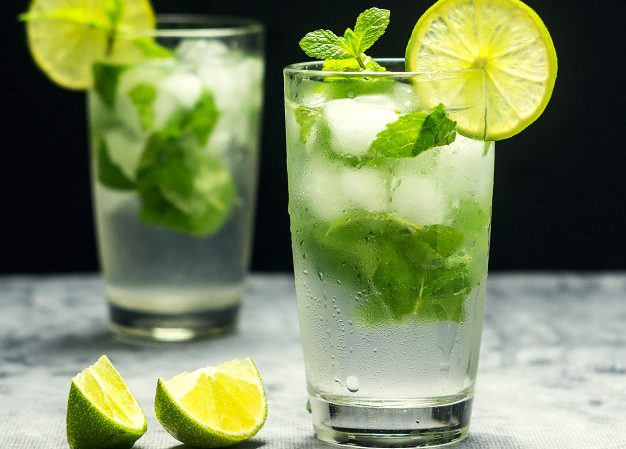

CAIPIROSKA

+Ingredintes de la Caipiroska:
- 1/2 lima
- 50 ml de vodka
- 25 grs de azúcar
- Hielo picado
+ Receta la Caipiroska:
En este caso usaremos un vaso corto. Colocamos la 1/2 lima con el azúcar y machacamos. Añadimos el hielo picado y el vodka. Revolver.